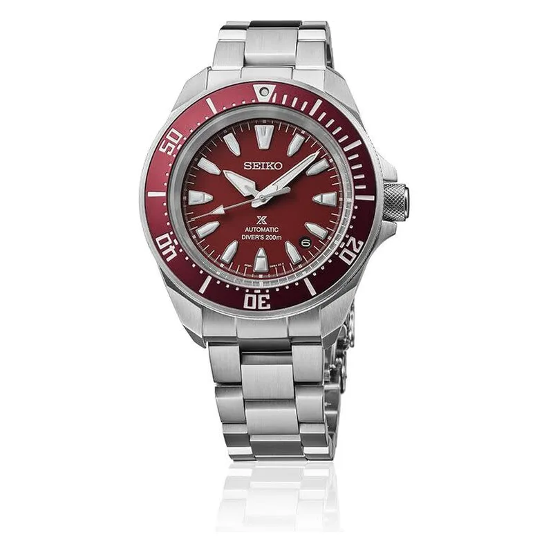

Encyclopedia / Seiko / Prospex Samurai

Current deal · verified Oct 19, 2026, 10:32 PM ET
$524 List $595
Save $71 (12%) · new · Jomashop
Ref. SRPL11 · Listed as new
Brand new from Jomashop, a grey-market (non-authorized) dealer, so expect the store's warranty (Jomashop lists '3 Year Jomashop Warranty') rather than the brand's. 'List' is the retail figure the dealer displays; I could not confirm it on the brand's own US site. Prices change fast; check the store before you buy.
Price comparison: fixed-price listings
| Store | Condition | Box & papers | Asking price | Link | Checked |
|---|---|---|---|---|---|
| Jomashop | new | Yes* | $524.99 | View | Oct 20, 2026 |
Fixed-price (buy-now) asking prices in USD for ref. SRPL11, cheapest new and cheapest pre-owned with box and papers per store, sorted low to high and checked Oct 20, 2026 (ET). Buy-now listings only. Pre-owned listings are shown only when the listing states box and papers. * New from a grey-market dealer: comes boxed, but the warranty card may be the dealer's rather than the brand's. Chrono24 rows are individual third-party marketplace sellers. Prices change fast; confirm with the store.
What it really costs
| Market | Price | Source |
|---|---|---|
| List price per Jomashop | $595 | jomashop.com |
| New at Jomashop | $524 | Jomashop |
| Pre-owned (Chrono24 asks) | about $450 – $650 (median ~$600, 14 listings sampled) | Chrono24 |
All prices in USD, checked Oct 19, 2026 (ET). Pre-owned ranges are the middle 80% of asking prices on the first Chrono24 results page for that ref (about 60 listings, used and some unworn), fixed-price listings only. Grey-market = brand-new from a non-authorized dealer.
Buying guide
Key references
| Ref. | What it is | US retail |
|---|---|---|
| SRPL11 | Prospex Samurai Automatic Red Dial Men's Watch | $595 |
Which one I'd pick
Which one: I priced the red-dial SRPL11.
What to check before you buy
- Warranty: grey-market new watches usually carry the dealer's warranty, not the brand's. Ask which one you get and whether the brand's warranty card is included.
- Exact reference: dial colour, size and strap change the price. Match the full ref (SRPL11) before comparing deals.
- Returns: check the store's return window and whether opening the box or removing stickers affects it.
Alternatives worth a look
- Seiko Prospex 'Turtle': Seiko's cushion-case diver. (45 mm stainless steel, Calibre 4R36, retail $525 (SRPE93))
- Seiko Prospex Alpinist: Seiko's field watch. (39.5 mm stainless steel, Calibre 6R35, retail $900 (current SPB507, Seiko US))
- Citizen Promaster Diver Eco-Drive BN0151-09L: Solar diver. (44 mm stainless steel, Eco-Drive Caliber E168 (light-powered), retail $450 (BN0151-09L, per Citizen))
History
Seiko was founded in Tokyo in 1881 by Kintarō Hattori; it launched Japan's first diver's wristwatch in 1965 and introduced the world's first commercial quartz wristwatch in 1969.
The Prospex Samurai SRPL11 has a 41.7 mm case, the Seiko Caliber 4R35 (41-hour power reserve) and 200 m water resistance, per Jomashop.
Specifications
| Brand | Seiko |
|---|---|
| Model | Prospex Samurai |
| Key references | SRPL11 |
| Launch year | Not confirmed |
| Case | 41.7 mm Stainless Steel |
| Thickness | 12.3 mm |
| Caseback | Solid |
| Bezel material | Stainless Steel |
| Dial | Red |
| Strap/bracelet | Stainless Steel |
| Functions | Date, Hour, Minute, Second |
| Movement | Seiko Caliber 4R35, automatic |
| Power reserve | About 41 hours |
| Water resistance | 200 m |
| Approx. US retail (Oct 2026) | $595 (list price per Jomashop) |
Specs from the retailer (Jomashop/WatchMaxx) or brand product page linked above for the main reference; see our research notes for which. Retail prices are list prices, not market value, and change often.
Highlights
- 41.7 mm Stainless Steel case
- Seiko Caliber 4R35
- 200 m water resistance
FAQ
How much is the Seiko Prospex Samurai?
List price per Jomashop: $595. New, the best verified price was $524 at Jomashop (checked Oct 19, 2026, 10:32 PM ET). Pre-owned asks on Chrono24 mostly ran $450 to $650.
What movement does the Prospex Samurai use?
The SRPL11 checked here uses the Seiko Caliber 4R35 (automatic) with about 41 hours of power reserve.
How big is the Prospex Samurai?
41.7 mm Stainless Steel, 12.3 mm thick.
Is the Prospex Samurai water resistant?
Yes, it's rated to 200 m.
Want this watch for less?
Every week I hunt down genuine deals on watches like the Prospex Samurai and send the best ones. Free, one email a week.
Get the free weekly issuePrices and availability last checked Oct 19, 2026. No affiliate links: I don't earn anything if you buy. Sources are listed in our research notes and linked above.